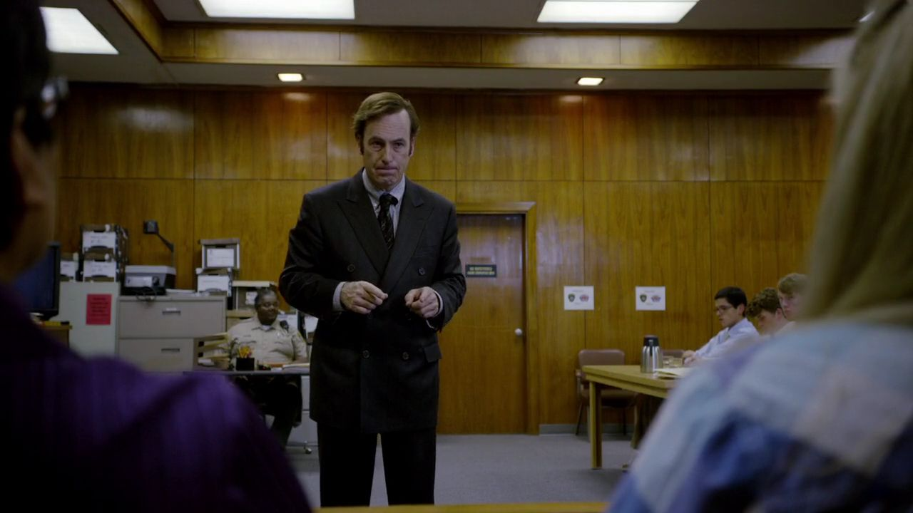

01
法院 / 洗手间 → 庭审
他把糟糕的案子，讲成一次青春犯错。

剧情事实吉米在洗手间排练，再为三名年轻被告向陪审团辩护。他试图把行为解释为青春期的愚蠢；检方随后播放被告拍下的侮辱遗体录像，击穿了这套淡化叙述。 [5]
这一场为什么重要 · 个人解读
先听辩护，再看证据，观众也短暂经历了一次被说服。吉米的本领是真实的：他能把一件事重新放进容易同情的故事。但画面提醒我们，叙述能力不能取消事实。他此刻仍在做辩护律师的工作，还没有伪造事件；这一点与结尾的骗局形成了必须保留的区别。
因此 →口才有用，但不能保证胜利，也不能保证收入。